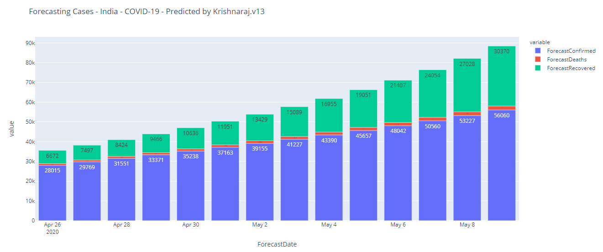

India - Corona Forecast Dashboard by Krishnaraj.v13@gmail.com
Last Updated: 2020-05-05 00:24 IST
Source:
1. Datasource:
Crowdsourced Patient Database
2. Technique Used:
Prediction Model
Average Growth Factor = 1.1277696874853096
Predicted 2 weeks back

Actual Vs Predicted Vs Forecast
Visits: